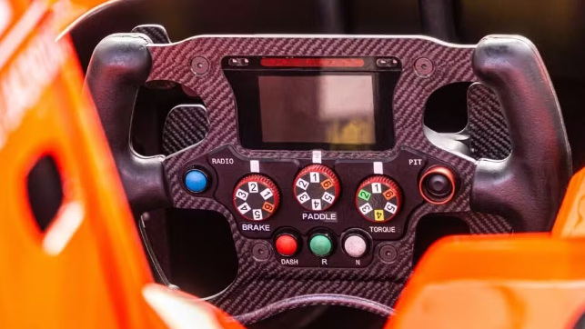

A História e os Grandes Campeões
A Fórmula 1 nasceu com o fim da Segunda Guerra Mundial, quando a Federação Internacional de Automobilismo (FIA) decidiu unificar as regras dos Grandes Prêmios europeus. Nasceu aí a "Fórmula" — o rigoroso conjunto de exigências técnicas para os construtores. A primeira corrida oficial do campeonato mundial foi disputada no histórico circuito de Silverstone, na Inglaterra, em 13 de maio de 1950. As décadas iniciais viram a consagração do argentino Juan Manuel Fangio, lenda que conquistou cinco títulos, e a ascensão do australiano Jack Brabham. Foi também nesta época, em 1958, que Maria Teresa de Filippis fez história como a primeira mulher a alinhar no grid, pilotando pela Maserati.
O esporte também viu domínios absolutos de grandes pilotos ao longo dos anos, com destaque para a "Era Schumacher". O alemão Michael Schumacher venceu dois mundiais pela Benetton na década de 1990 (1994 e 1995) e iniciou uma dinastia avassaladora pela Ferrari a partir de 2000. No Brasil, a paixão pela categoria se consolidou após a primeira prova oficial em 1972, no autódromo de Interlagos, mesmo ano em que Emerson Fittipaldi sagrou-se o primeiro brasileiro campeão do mundo. Ayrton Senna elevou essa paixão a um nível nacional com sua pilotagem genial e sua rivalidade histórica nos anos 1990 com Alain Prost e Nigel Mansell. Mais recentemente, em 2026, Gabriel Bortoleto assumiu o posto de piloto titular na Sauber (futura Audi), encerrando um longo período sem brasileiros titulares no grid.
Os Circuitos Mais Icônicos
O campeonato roda o globo da Ásia às Américas, mas o esporte construiu seu prestígio sobre alguns traçados históricos que exigem características totalmente diferentes das máquinas. Em Mônaco, o circuito de rua mais glamouroso e perigoso do mundo, a velocidade final importa menos do que a aderência e a precisão milimétrica perto dos muros. Já em Spa-Francorchamps, na Bélgica, os pilotos enfrentam a pista mais longa do calendário, famosa por suas variações climáticas e pela mítica curva Eau Rouge.
Na Itália, o autódromo de Monza é reverenciado como o "Templo da Velocidade", sendo o circuito mais rápido da temporada, onde os motores operam em aceleração máxima na maior parte do tempo. O berço da F1, Silverstone, na Inglaterra, apresenta uma pista extremamente fluida que testa violentamente a aerodinâmica e a resistência física dos pilotos em curvas de alta velocidade. Por fim, o autódromo de Interlagos, em São Paulo, destaca-se pelo sentido anti-horário, terreno acidentado e pela imprevisibilidade climática, características que o tornam palco de decisões dramáticas.

Formato de Disputa e as Corridas Sprint
O calendário da Fórmula 1 conta tradicionalmente com 24 etapas, que variam entre finais de semana padrão e de formato Sprint. Nos finais de semana tradicionais de três dias, a sexta-feira é dedicada a duas sessões de treinos livres (TL1 e TL2). O sábado engloba um terceiro treino livre e a sessão de classificação, dividida em três partes (Q1, Q2 e Q3), que define o grid de largada, culminando no Grande Prêmio principal disputado no domingo.
Para aumentar a dinâmica da competição, seis etapas de 2026 adotam o formato Sprint (Xangai, Miami, Canadá, Silverstone, Zandvoort e Singapura). Nestes eventos, a sexta-feira conta com apenas um treino livre antes do Sprint Shootout, uma classificação curta com uso obrigatório de compostos de pneus específicos. O sábado é reservado para a Corrida Sprint, uma prova enxuta de 100 km que não exige paradas nos boxes e distribui até 8 pontos ao vencedor. A partir de 2026, uma novidade importante é a reabertura do Parque Fechado (Parc Fermé) após a Sprint, permitindo que as equipes ajustem os carros antes da classificação tradicional que acontece no mesmo dia para a corrida de domingo.
Tecnologia: Aerodinâmica e Motores Híbridos
Lidando com forças laterais de 5 a 6G nas curvas, os carros de Fórmula 1 utilizam o "efeito solo" desde 2022 para se manterem colados ao asfalto. Contudo, o regulamento de 2026 trouxe a maior revolução recente da categoria. Os monopostos ficaram 30 kg mais leves e 10 cm mais estreitos, o que aumentou a agilidade e facilitou as ultrapassagens. O tradicional DRS (asa móvel) foi substituído pelo SLM (Modo de Linha Reta), permitindo que todos os pilotos achatem ativamente as asas dianteira e traseira nas retas para ganhar velocidade pura. Além disso, os pneus fornecidos pela Pirelli diminuíram de diâmetro, reduzindo o peso total do conjunto.
A parte motriz também sofreu mudanças profundas. As novas Unidades de Potência entregam a energia dividida igualmente, com 50% originada do motor a combustão e 50% do sistema elétrico. Os pilotos agora contam com um "Modo de Ultrapassagem" que libera carga elétrica extra ao se aproximarem a menos de um segundo do carro da frente. Toda essa engenharia mecânica trabalha em conjunto com uma verdadeira guerra tecnológica. Um carro de F1 possui mais de 300 sensores gerando terabytes de dados por corrida. Equipes de ponta utilizam modelos de Inteligência Artificial Física para transcrever dezenas de canais de rádio simultaneamente e cruzar dados de desgaste, sugerindo estratégias de pit-stop em frações de segundo.

Regulamento Financeiro e o Valor das Equipes
A F1 é amplamente reconhecida como o esporte mais caro do mundo. Apenas para alinhar no grid, as equipes pagam uma taxa base de inscrição superior a US$ 650 mil, somada a um valor por ponto conquistado no ano anterior, o que pode gerar custos de até US$ 23 milhões. Para nivelar a competição, a FIA impõe um rígido Teto de Gastos (Cost Cap), estabelecido em US$ 215 milhões anuais para 2026. Este limite não inclui despesas com os salários dos pilotos, os três funcionários mais bem pagos da equipe, marketing e viagens. Paralelamente, montadoras como Ferrari, Mercedes, Audi e Honda possuem um teto separado de US$ 190 milhões anuais exclusivo para o desenvolvimento dos motores.
Todo esse investimento reflete-se no valor de mercado das escuderias, transformando o grid em um negócio multibilionário. Segundo o levantamento mais recente da revista Forbes (2025), a Ferrari é a equipe mais valiosa do mundo, avaliada em US$ 6,5 bilhões, amparada por sua tradição de 15 títulos de construtores. A Mercedes aparece logo atrás com US$ 6 bilhões, ostentando a operação mais lucrativa do grid. O pelotão de elite segue com McLaren (US$ 4,4 bilhões) e Red Bull Racing (US$ 4,35 bilhões). O ranking financeiro se completa com Aston Martin (US$ 3,2 bilhões), Williams (US$ 2,5 bilhões), Alpine (US$ 2,45 bilhões) e a Sauber, equipe que transita para se tornar a fábrica da Audi (US$ 2,4 bilhões). O prestígio comercial da categoria atrai constantemente novos investidores, abrindo espaço para o ingresso planejado de marcas como a Cadillac nos próximos anos.